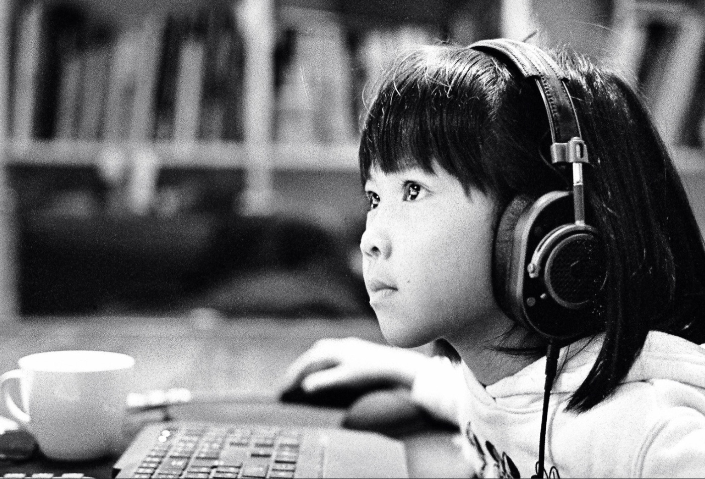
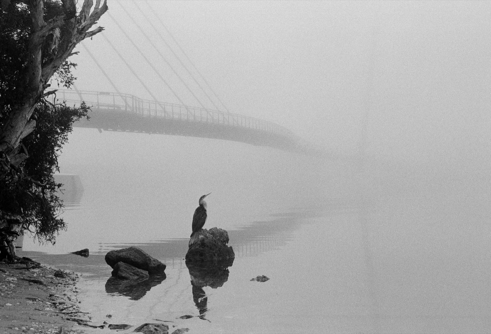
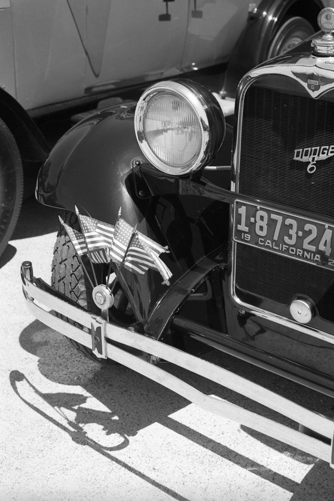

CT 安检机已装进 296 个机场：胶卷别托运——托运行李也照扫
机场安检口正在换机器。CT 型安检机从试点变成铺开：截至 2026 年 7 月 6 日，美国 TSA 已装 1,162 台、覆盖 296 个机场（TSA 发言人对媒体表示）；中国也不是例外——民航局的口径是，截至 2024 年 1 月已有 5 家机场的 23 台手提行李 CT 投入旅客安检。CT 机确实更好用：笔记本和洗漱用品不用掏出来了。但它的通道比替换掉的旧 X 光机每侧窄 1.0–1.8 厘米，塞不进去的登机箱会被拦下、被要求改走别的通道，或者干脆托运。而柯达 2026 年的官方口径恰好把最后那条路堵死了：「Do not check your film; Checked bags are also CT scanned.」——别托运胶卷，托运行李也会被 CT 扫。
一、先把官方原话摆出来：能核实的与不能核实的
最容易写歪的地方，是把媒体标题当成官方规定。先分级：柯达与民航局是一手口径，TSA 那页官方但很旧，装机数字是官方发言人对媒体的说法，通道尺寸只有媒体写过。
| 说法 | 现状 |
|---|---|
| CT 机在随身行李上的部署「持续加速」；旅行时最好假设全球任何主要机场都在用 CT | ✅ 柯达官方页原话 |
| 强烈建议不要让任何未曝光、或已曝光但未冲洗的胶卷过 CT 机 | ✅ 柯达官方原话，不分感光度 |
| 柯达电影片页：新 CT 机「已证实会令所有未冲洗胶卷灰雾」，高强度扫描机会毁掉任何感光度的未冲洗胶卷 | ✅ 柯达官方原话 |
| 「别托运胶卷；托运行李也会被 CT 扫」 | ✅ 柯达官方原话，与 TSA 页面口径相左 |
| 透明可封袋单独装 → 过检时从包里取出 → 要求手检；手检不保证所有机场，强烈建议提前联系机场 | ✅ 柯达官方原话 |
| 手检做不到时的替代方案：当地买卷、当地冲；客机货舱的货运件同样会被高强度 X 光扫 | ✅ 柯达官方原话 |
| 柯达提供可打印的「警告标签」，贴在装胶卷的袋子上（含日本 0106 等分地区版本） | ✅ 柯达官方页，最容易被忽略的一招 |
| TSA：未冲洗胶卷可随身，「也可以托运」，建议手检 | ✅ TSA 官网，但该页最后更新是 2017-05-04，全页未提 CT |
| 中国民航局：2022 年出台手提行李 CT 安检设备鉴定标准并正式引入；截至 2024 年 1 月，5 家机场 23 台投入旅客安检 | ✅ 民航局官网（2024-02-22） |
| 中国官方科普：普通感光度胶卷常规旅行安检安全，但 X 光影响会累积，高感卷忌多次过检 | ✅ 生态环境部核安全科普页，全页未提 CT |
| 美国已装 1,162 台 CT、覆盖 296 个机场（截至 7 月 6 日） | ⚠️ TSA 发言人对媒体表示，非官网公告 |
| CT 通道比旧 X 光机每侧窄约 1.0–1.8 厘米（开口约 24.5 × 16.5 英寸） | ⚠️ 媒体报道（2026-09-09），非官方规格表 |
| 「超大登机箱被逼去托运」 | ⚠️ 媒体标题口径；另一家（7 月）说 TSA 会改人工检查或换走无 CT 通道——两者并不一致 |
| 官方给的「能过几次」「ISO 多少以内」阈值 | ❌ 查不到：柯达对 CT 一律不建议，没有阈值 |
二、反直觉的地方：最危险的不是「过机器」，是「托运」
很多人的直觉是：随身行李查得严、又是过机又是开包，托运反而省事。柯达的口径正好相反——托运行李同样会被 CT 扫，而且那件行李不在你手上：你没法要求手检，也没法把胶卷单独拎出来。
更麻烦的是两份官方口径在打架：TSA 官网那个摄影师都会去查的页面，写着胶卷「可随身、也可托运」，并建议手检——但那页最后更新于 2017 年 5 月 4 日，写在 CT 铺开之前，全页没有出现 CT；柯达那页是 2026 年仍在维护的口径，直接把托运划掉。遇到冲突，信更晚、且明确讲了 CT 的那一份。
⚠️ 这里还要防一个误读：TSA 写「也可以托运」是「没禁止」，不是「建议」；「禁止托运」是柯达的立场。两句话不是同一件事——别把「官方说可以」当成「官方说安全」。

三、过一次 CT 到底损失多少：官方不给数字，但有人测过
柯达没有发布 CT 的损失曲线。能查到的是柯达 2020 年一次机场实测的转述（⚠️ 转录件，不是官方公告）：把一卷彩负放进纽约肯尼迪机场的随身 CT 机，过了 1–10 次，结论是「仅 1 次就出现明显灰雾，黑色发闷、暗部细节丢失」，而且感光度越高越严重。
第三方实测更具体（⚠️ 非官方结论）：在阿姆斯特丹史基浦机场的 CT 机上，ISO 800 的彩负「已经不是它自己了」，Delta 3200「明显报废」；ISO 50 / 100 只在强光下看得出灰雾；从 ISO 400 起，灰雾就已经「肉眼可见地毁片」。另一家的单次测试里，ISO 400 彩负仍出得了影，但灰雾、偏色、颗粒一起上来。铅袋不是护身符：实测只有 30–50% 的遮挡效果。
| 感光度 | 单次 CT 之后（实测） | 来源分级 |
|---|---|---|
| ISO 50 / 100 | 灰雾只在强光下看得出来 | ⚠️ 第三方实测 |
| ISO 400 | 明显灰雾、偏色、颗粒增加；「能不能用」两家口径不一 | ⚠️ 第三方实测（两家） |
| ISO 800 / 3200 | 「已经不像它自己」「明显报废」 | ⚠️ 第三方实测 |
| 不分感光度 | 任何未冲洗胶卷都别过 CT——官方不给豁免 | ✅ 柯达官方 |
| 累积效应 | X 光影响会累积；感光度越高越糟（EI 500 的变化约为 EI 125 的 3 倍） | ✅ 柯达官方（存储说明） |
四、中国这边也不是例外
国内读者最容易误判的一条是「CT 机是国外的事」。民航局 2024 年 2 月的口径写得很清楚：2022 年研究出台了手提行李 CT 爆炸物探测安检设备的鉴定标准，并正式引入这类设备；截至 2024 年 1 月，已有 5 家机场的 23 台设备投入旅客安检现场使用。更早一次是深圳机场（2020 年 9 月，民航局首批试用单位）。
⚠️ 但国内官方对旅客的科普还停在 X 光机时代：生态环境部核安全科普页讲的是「感光度一般的普通胶卷在常规旅行条件下通过安检设备是安全的」「X 光影响可积累、高感光度胶卷应避免多次过 X 光」——整页没有出现 CT，也没有手检、托运这些操作口径。所以「国内机场还是老机器」这句安慰，没有来源支撑。（具体是哪 5 家机场、2026 年最新台数：❌ 查不到。）
五、出发前照做就行：八条清单

六、一句话
X 光机时代，胶卷怕的是次数；CT 时代，胶卷怕的是你把它放进了托运箱。

数据口径：柯达口径取自 Kodak Alaris 官方页《CT Scanning X-Ray Technology and Film》与柯达电影片《Transporting & Storing Film》（本站 2026-09-28 抓取），文中英文为原句；TSA 口径取自 tsa.gov 的 Film 条目（最后更新 2017-05-04）；中国口径取自民航局官网（2024-02-22）与生态环境部核安全科普页。「1,162 台 / 296 个机场」是 TSA 发言人对媒体的说法（7 月 6 日数据），不是官网公告；「通道 24.5 × 16.5 英寸」「每侧窄 1.0–1.8 厘米」出自两篇署名报道，不是官方规格表，且两家对「箱子过不去之后会怎样」写法不一致，本站按「人工检查或改走通道，也可能被要求托运」并列。第三节的损失数据全是第三方实测与一次柯达实测的转述，不是官方结论，两家对 ISO 400 的判断也不一致。「能过几次」「ISO 多少以内」的官方阈值查不到，本站不替它补。文中样片取自本站收录的同档黑白卷（T-Max P3200 / Tri-X 400 / RPX 400 / T-Max 400），只作影调参照，与安检测试无关。
手检优先级最高的几卷（本站收录）
T-Max P3200（ISO 3200 · 约 ¥95–115） Delta 3200（ISO 3200 · 约 ¥95–120） T-Max 400（ISO 400 · 约 ¥90–110） Tri-X 400（ISO 400 · 约 ¥85–105） HP5 Plus（ISO 400 · 约 ¥70–90） Double-X 5222（ISO 250 · 约 ¥75–95）
去胶卷库看看这几卷
「胶卷档案」是一个可搜索的胶卷资料库：每卷都有规格、特性、使用感受、参考价与实拍样片。搜品牌或型号就能直达。